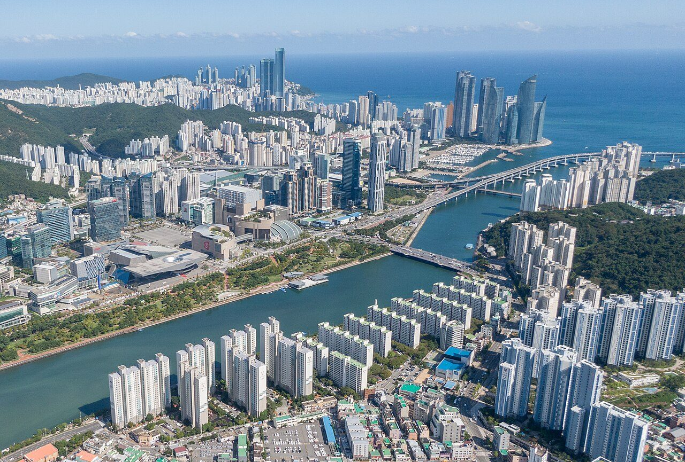
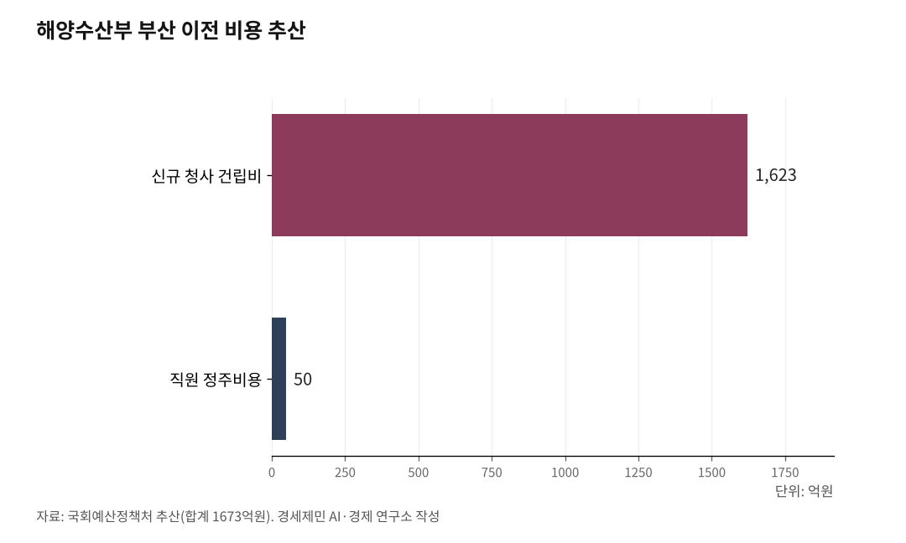

부산 5조 vs 인천 0원… '해양 권력' 대이동
해수부 부산 이전 완료, 연구기관·예산·인력 부산 집중
경인경제권 2600만명 해양 인프라 공백 심화
1. 해수부 부산 이전, 5조원과 함께 갔다
해양수산부가 2025년 12월 21일 세종에서 부산으로 이전을 완료했다. 본부 인원 850여 명(해수부 보도자료, 2025.7.10.)이 284km를 이동했다. 중앙부처 역사상 최장 거리 이사다. 이삿짐만 5t 트럭 249대 분량이었다. 국회 예산정책처가 추산한 이전 비용은 신규 청사 건립비와 직원 정주비용 등을 포함해 1673억원이다. 신규 청사 건립비 1623억원, 직원 정주비용 50억원이다. 전재수 해수부 장관은 2025년 7월 14일 인사청문회에서 "직접 비용 200억~300억원"이라고 했으나 실제 추산액은 5.6~8.4배에 달했다.

부산시는 해수부 이전에 맞춰 '경제성장 혁신전략'을 발표했다. 4조8882억원 규모 71개 사업이다. 해양-미래기술 융합에 1조9270억원, 해양 AI 대전환 웨이브(WAVE, World class AI Value for Ocean Economy) 프로젝트에 1조1100억원을 투입한다. 박형준 부산시장이 직접 나서 '글로벌 5대 해양도시'를 선언하고 민관 전담조직까지 출범시켰다. 해수부 2026년 예산 7조3566억원(국회 확정 기준) 가운데 부산지역 배정액은 5382억원이다. 인천지역 920억원의 약 6배다.
2025년 11월 27일 '부산 해양수도 이전기관 지원에 관한 특별법안'이 국회 본회의를 통과했다. 재석 256명 중 찬성 255명, 반대 1명. 법안 이름에 '해양수도 부산'이 명문화됐다. 해수부와 공공기관의 부산 이전을 제도적으로 뒷받침하고, 해양특화지구 지정과 이주직원 정착 지원 근거를 담았다.

2. 인천항 356만TEU 2위, 연구기관은 0개
인천항은 2024년 컨테이너 물동량 356만TEU(355만8455TEU, 인천항만공사 보도자료)로 국내 2위다. 컨테이너 국가별 수출 비중 66.0%, 수입 비중 56.2%(2024년 인천항만공사 보도자료)로 대중국 물류의 핵심 관문이다. 인천국제공항은 국제선 화물 290만6067톤(2024년 인천공항공사 보도자료)으로 세계 3위다. 경인경제권 인구 2600만명(2024년 주민등록 기준), 국내 지역내총생산(GRDP)의 52.8%(2024년 명목 기준, 국가지표체계)가 이 지역에서 나온다.
그런데 이 지역에 해양 분야 정책연구기관이 단 하나도 없다. 해양수산 관련 국책연구기관, 국립연구소, 해양대학 어느 것도 없다. 인천항이 국내 물동량 2위를 처리하면서도 항만 효율성을 연구하거나 해양산업 정책을 개발할 기관이 부재한 것이다.
인천항만공사가 항만 운영을 담당하지만 이는 시설 관리와 물류 처리 기능이다. 해양산업 생태계를 설계하고 중장기 전략을 수립할 싱크탱크는 전무하다.
3. 부산엔 KMI·KIOST·국립수산과학원, 인천엔 없다
부산의 해양 연구·정책 인프라는 압도적이다. 한국해양수산개발원(KMI)이 영도에 있다. 해양수산 정책을 총괄 연구하는 국책 싱크탱크다. 한국해양과학기술원(KIOST)도 영도에 있다. 해양과학기술 연구를 담당한다. 국립수산과학원은 기장군에 있다. 수산자원 연구와 양식기술 개발을 맡는다.
여기에 국립해양조사원, 국립해양박물관, 한국해양진흥공사(KOBC), 한국선급(KR), 해양환경공단 부산지사까지 있다. 대학도 한국해양대학교와 부경대학교가 해양 인력을 양성한다. 해양수산인재개발원까지 기장군에 자리잡았다.
부산 영도구 동삼혁신지구에는 총사업비 322억원을 투입한 해양과학기술 산학연 협력센터가 2025년 말 준공됐다. 2026년 상반기 개관이 목표다. 해양 AI·디지털 전환을 선도할 혁신 거점이다.
인천에는 이 가운데 단 하나도 없다.
4. 해양수도 특별법 통과, 인천은 어디에도 없다
부산 해양수도 특별법 내용을 보면 인천은 어디에도 없다. 부산 이전기관·직원 정착 지원, 해양특화지구 지정, 부산시장 지원계획 수립 등 부산 중심 내용만 담겼다.
2026년 해수부 예산 세부 내역이 이를 증명한다. 부산지역은 진해신항 4622억원, 부산신항 1단계 322억원, 부산항 시설 확충 83억원, 해수부 이전 322억원 등 5382억원이다. 인천지역은 인천신항 203억원, 인천남항 197억원, 인천북항 135억원 등 920억원이다. 신규사업은 인천내항 재개발 18억원뿐이다. 진해신항 단일 사업 예산이 인천항 전체 예산의 5배다.
해수부가 부산에 있으니 예산이 부산으로 쏠린다. 행정이 곧 예산이고, 예산이 곧 지역 경쟁력이다.
5. '해양 권력' 이동, 위기의 시작점
해수부 부산 이전은 단순한 청사 이동이 아니다. 정책 결정권, 예산 배분권, 연구 인프라, 인력 양성 체계가 모두 부산으로 쏠리는 구조적 전환이다.
부산은 약 4조9000억원 규모 해양 투자 전략을 가동하고, 특별법으로 제도적 기반까지 갖췄다. 인천은 국내 2위 항만을 운영하면서도 해양산업 미래를 설계할 연구기관 하나 없다.
경인경제권 2600만명(2024년 주민등록 기준)이 생산하는 경제 규모에 걸맞은 해양 인프라가 필요하다. 해양 권력의 대이동은 이미 시작됐다. 인천이 움직이지 않으면 격차는 더 벌어진다.
참고문헌
·"해양수산부 부산 이전, 청사 위치 결정", 해양수산부 보도자료, 2025.7.10., https://www.mof.go.kr/doc/ko/selectDoc.do?docSeq=62286&bbsSeq=10&menuSeq=971
·"해양수산부 부산 이전 시작", 해양수산부 보도자료, 2025.12.8., https://www.mof.go.kr/doc/ko/selectDoc.do?bbsSeq=10&docSeq=64070&menuSeq=971
·"부산 해양수도 이전기관 지원에 관한 특별법안 국회 본회의 통과", 해양수산부 보도자료, 2025.11.27., https://www.mof.go.kr/doc/ko/selectDoc.do?docSeq=63968&bbsSeq=10&menuSeq=971
·"2026년도 해양수산부 예산 7조 3566억 원 확정", 해양수산부 보도자료, 2025.12.5., https://www.mof.go.kr/doc/ko/selectDoc.do?bbsSeq=10&docSeq=64020&menuSeq=971
·"인천항, 2024년 컨테이너 물동량 역대 최대기록 경신", 인천항만공사 보도자료, 2025.1.2., https://www.icpa.or.kr/article/view.do?articleKey=29392&boardKey=217&menuKey=400
·"2024년 인천공항 실적", 인천국제공항공사 보도자료, 2025.1., https://www.airport.kr/co/ko/cpr/pr/pblntPr/coPblntPrDetail.do?prId=1527
·"부산 해양수도 이전기관 지원에 관한 특별법", 국가법령정보센터, 2025.12.4. 공포, https://www.law.go.kr
·"해수장관은 '200억' 예상했는데…해수부 부산 이전에 '최소 1673억' 추산", 시사저널, 2025.7.25., https://www.sisajournal.com/news/articleView.html?idxno=341004
·"부산항 5400억 vs 인천항 920억... '해수부 이전' 예산 쏠림 심각", 인천투데이, 2025.9.3., https://www.incheontoday.com/news/articleView.html?idxno=307720
·"'해수부' 넣은 간판상호, 곳곳 환영 현수막…부산 동구 '들썩'", 국제신문, 2025.12.10., https://www.kookje.co.kr/news2011/asp/newsbody.asp?code=0300&key=20251210.22002003283
※ 이 기사는 AI 프로그램 클로드를 활용해 작성했습니다.
사진 출처
· [대표사진] 부산광역시, "Busan City Haeundae District (01).jpg", 위키미디어 공용, 공공누리 제1유형, https://commons.wikimedia.org/wiki/File:Busan_City_Haeundae_District_(01).jpg
※ 이 기사는 인공지능을 활용해 작성했습니다.
관련기사
- [인천해양산업, 생존 기로 2] 해상풍력 53조 '무주공산'... 연구 인프라 전무
- [인천 해양산업, 생존기로 ③] 7GW 배후항만, 10만평 되겠나... 에스비에르의 8분의 1
- [인천해양산업, 생존기로④] 해상풍력 O&M(운영과 정비)
- [인천해양산업, 생존기로⑤] 경인경제권, 해양대학이 없다
저작권자 © AI경세제민 무단전재 및 재배포, AI학습 및 활용 금지